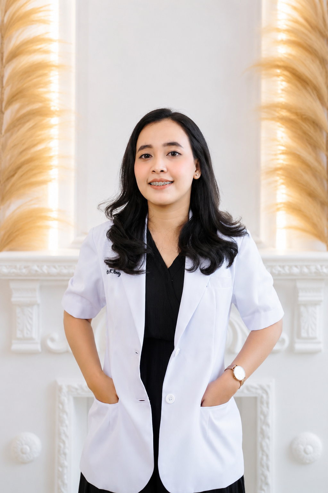

drg. Yuli Kartilla Panjaitan

Saya adalah seorang dokter gigi profesional yang memberikan perawatan kesehatan gigi dan mulut dengan berfokus pada kenyamanan serta kepuasan pasien, saya aktif menerapkan standar klinis kedokteran gigi modern yang aman dan solutif[cite: 3].
Lihat PortofolioPemasangan Behel (Ortodonti)
Memperbaiki susunan gigi yg tidak rapi dan memperbaiki posisi rahang
Dental Bleaching
Prosedur pemutihan gigi untuk membuat permukaan gigi tampak lebih putih natural
Scaling
Prosedur pembersihan karang gigi untuk menghindari risiko peradangan gusi dan bau mulut
Restorasi gigi
Prosedur penambalan pada gigi karies/ berlubang dengan menggunakan bahan resin komposit sewarna gigi
Perawatan Saluran Akar
Prosedur perawatan gigi yang bertujuan untuk merawat gigi yang sudah terinfeksi dan menghilangkan abses gigi
Pencabutan Gigi
Prosedur medis untuk mengangkat gigi yang rusak, terinfeksi, atau tidak dapat dipertahankan lagi dengan tujuan menghentikan rasa sakit dan mencegah penyebaran infeksi lebih lanjut
Gigi Tiruan (Palsu)
Pembuatan protesa gigi lepasan maupun cekat untuk menggantikan fungsi fonetik dan estetika gigi yang tanggal.
Dental Anak (Pedodonti)
Pencegahan dini gigi berlubang pada anak-anak melalui pendekatan perawatan yang ramah, nyaman, dan edukatif.
Education History
- Sarjana Kedokteran Gigi (2018) - Universitas Sumatera Utara[cite: 3]
- Profesi Dokter Gigi (2021) - Universitas Sumatera Utara[cite: 3]
Clinical Experience
- Dokter Gigi Praktisi di Vera Dental Care (2022 s.d. 2025, Medan)[cite: 3]
- Dokter Gigi Praktisi di Lanera Dental Care & TP Dental (Batam)[cite: 3]